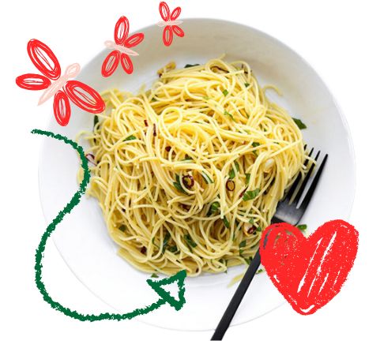

Erik's Tasting Notes:
-
Peperoncino spaghetti is proof that sometimes
the simplest things bring the biggest smiles.
Just a swirl of golden olive oil, a whisper of
garlic, and a sprinkle of dried red chili peppers,
and—bam!—you’ve got pasta magic. In Italy, they call
it aglio, olio e peperoncino (which sounds as fancy
as it tastes), but don’t be fooled by the chili peppers,
they bring more smoky charm than fiery heat. In fact,
it’s so gentle even kids can twirl their forks happily.
Comfort food, Italian style.
-